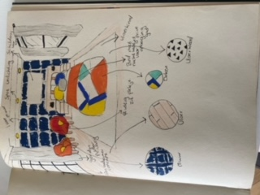
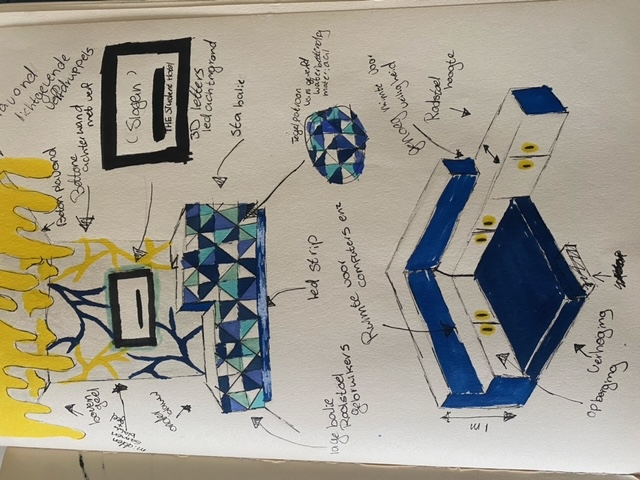

Projecten
The Student Hotel
The student hotel is een tweede jaars project van mijn mbo opleiding. De bedoeling van dit project was om voor The student hotel een hotel kamer en een balie te ontwerpen in hun huis style.
Merk onderzoek
Bij dit project was het erg belangerijk om de huis style van het bedrijf te begrijpen, daarom is een merk onderzoek erg belangerijk voor het ontwerp proces van start gaat. Wat belangerijk was voor dit project is dat er goed werd gekeken naar hun bestaande hotel kamers en algemene inrichting.
Webpagina van The student hotelHotel kamer
Balie
Prakbar
Prakbar is een project voor een restaurant met het consept dat het alleen voor meenemen is. Het restaurant waar het om gaat heet Prakbar, omdat het een restaurant is waar stamppot het focus punt is. Het aleen meenemen komt van het idee dat je in het restaurant alleen plekken heb waar je zelf je stampotten kan samen stellen in een wekpot, en zo per bar je stamppot eigen maakt.
Restaurant
Etalage
Je moeder
Je moeder is een examen project voor een wassarette. De bedoeling van dit project is dat er een wassarette ontworpen moest worden waar je niet alleen je was komt doen, maar het ook een plek is waar je met je geemeenschap samen kan komen voor bijvoorbeeld: optredens, koffie drinken, werk projecten of om gewoon lekker te studeren terwijl je je was aan het doen bent. De naam Je moeder is ook ontstaan door een kleding label.